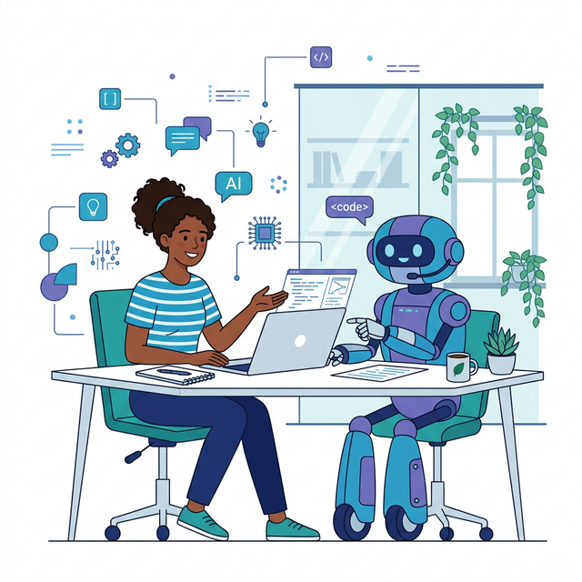

SEMANA 1 – Abertura e Primeiros Passos
Nesta semana, você formará seu grupo de trabalho, escolherá o tema do seu aplicativo e estudará o público-alvo do produto. É o ponto de partida do seu Projeto Integrador.
Todo grande aplicativo começa com uma ideia bem definida e uma equipe alinhada. Antes de escrever uma única linha de código ou desenhar a primeira tela, é fundamental entender para quem você está desenvolvendo e qual problema seu app vai resolver. Esta semana é dedicada exatamente a esses fundamentos.
|
1.1 Formação dos Grupos
O Projeto Integrador é desenvolvido em equipe de quatro integrantes. A colaboração é uma competência essencial no mercado de trabalho, e este projeto simula o ambiente real de desenvolvimento de software.
|
Extreme Programming (XP): metodologia ágil focada na qualidade do software e na resposta rápida às mudanças. Uma de suas práticas mais famosas é o Pair Programming, onde dois desenvolvedores trabalham juntos. Neste projeto, em vez de uma divisão tradicional e burocrática de papéis (como no Scrum), o foco será puramente técnico e ágil: você programará em "par" com uma Inteligência Artificial (IA). Ferramentas como ChatGPT, Claude ou GitHub Copilot atuarão como seu Co-Pilot constante. |
Conhecer como interagir com a Inteligência Artificial é a competência mais crítica atualmente no mercado de trabalho. A tabela abaixo apresenta os focos de atuação do(a) desenvolvedor(a) em conjunto com a IA — todas as decisões de projeto são tomadas em conjunto:
| Área de Atuação | O Seu Papel (Piloto) | O Papel da IA (Co-Piloto) |
|---|---|---|
| Concepção e Design | Define o problema, o contexto e aprova as ideias. | Sugere personas, cores, fluxos e valida protótipos. |
| Desenvolvimento Web/Mobile | Constrói no FlutterFlow, manipula widgets e monta visual. | Sugere expressões lógicas, lógicas condicionais e pequenos scripts. |
| Banco de Dados (Firestore) | Cria coleções no Firestore, configura regras de segurança iniciais e gerencia o console Firebase. | Planeja as estruturas de documentos/coleções, escreve regras avançadas de segurança e checa limites de cota. |
| Revisão e Refatoração | Lê o código resultante, atesta que resolve o problema. | Caça bugs, encontra redundâncias e simplifica consultas ao Firestore. |
|
No Projeto Integrador, a responsabilidade final pelo produto é sempre humana. A IA escreve, sugere e guia, mas você é o arquiteto e validador. Se um código vier solto ou com informações antiquadas, cabe a você refinar a diretriz ("o prompt"). |

Trabalhando com Ciclos Curtos e MVP
O Projeto Integrador segue ciclos curtos de desenvolvimento: cada semana você deve alcançar um objetivo claro e gerar um incremento que funcione. Ao final do ciclo, ocorre uma revisão rápida (feedback) e ajustes caso necessário.
|
MVP é a versão mais simples de um produto que ainda entrega valor real ao usuário. Em vez de construir todas as funcionalidades de uma vez, você lança o essencial, coleta feedback e melhora o produto em ciclos iterativos. |
Com a ajuda da IA, você deve focar primeiro nos requisitos de Alta Prioridade e iterar sem se estender no longo prazo.
1.2 Escolha do Tema do Aplicativo
A escolha do tema é uma das decisões mais importantes do projeto. Um bom tema deve equilibrar viabilidade técnica — ou seja, se é possível implementar o app com as ferramentas disponíveis (FlutterFlow + Firebase) e dentro do prazo de 16 semanas — com relevância (o que realmente é útil para pessoas).
Critérios para um Bom Tema
Avalie seu tema respondendo às perguntas abaixo:
| Critério | Pergunta-Guia |
|---|---|
| Problema real | O app resolve um problema real ou atende a uma necessidade genuína? |
| Público definível | Consigo descrever claramente quem usaria esse app? |
| Viabilidade | É possível desenvolver o app com FlutterFlow e Firebase em 16 semanas? |
| Diferencial | O que torna meu app diferente de soluções que já existem? |
| Originalidade | O tema foi escolhido pelo grupo (não é cópia de um app existente)? |
Categorias de Apps Sugeridas
Se o grupo ainda não tem ideia, considere estas categorias como ponto de partida:
- Saúde e bem-estar: rastreador de exercícios, diário de saúde mental, controle de medicamentos. Problema: muitas pessoas esquecem de tomar remédios no horário correto.
- Educação: organizador de estudos, quiz de matérias, caderno digital. Problema: estudantes têm dificuldade em organizar prazos de múltiplas disciplinas.
- Comunidade: app de evento local, fórum de bairro, voluntariado. Problema: moradores não sabem quais eventos acontecem perto de casa.
- Produtividade: gerenciador de tarefas, controle financeiro pessoal, lista de compras compartilhada. Problema: dividir despesas entre colegas de república gera conflitos.
- Sustentabilidade: rastreador de carbono, app de reciclagem, horta urbana. Problema: pessoas querem reciclar, mas não sabem onde descartar cada tipo de material.
|
Evite temas muito amplos ou complexos. Um app de rede social completa ou marketplace com pagamentos é difícil de finalizar em 16 semanas. Prefira um escopo menor e bem feito a um escopo grande e incompleto. |
1.3 Estudo do Público-Alvo
Conhecer profundamente quem vai usar seu app é o que distingue um produto bem-sucedido de um que ninguém usa. O estudo do público-alvo envolve pesquisa sobre o perfil, necessidades, comportamentos e limitações dos usuários potenciais.
|
Persona é uma representação fictícia, mas baseada em dados reais, do usuário típico do seu app. Uma persona inclui: nome fictício, idade, profissão, objetivos, frustrações e como ela se relaciona com a tecnologia. |
Como Criar uma Persona
Siga os passos abaixo para construir a persona do seu projeto:
- Pesquise: converse com pessoas que representam seu público-alvo, pesquise em fóruns e redes sociais, ou utilize IA para simular perfis de usuários e levantar necessidades.
- Identifique padrões: quais são as necessidades e frustrações mais comuns?
- Crie o perfil: preencha o template com nome, foto (pode ser ilustração), dados demográficos, objetivos e dores.
- Use a persona: sempre que tomar uma decisão de design ou funcionalidade, pergunte "o que [nome da persona] precisaria aqui?"
A Figura 1.2 apresenta um exemplo de card de persona para o app FinanCampus, reunindo em um único painel visual as informações essenciais do usuário típico do projeto.

| Campo | Conteúdo |
|---|---|
| Nome | Mariana, 22 anos |
| Profissão | Universitária, trabalha meio período |
| Objetivo | Controlar gastos mensais e economizar para uma viagem |
| Frustrações | Sempre perde o controle dos gastos no final do mês; planilhas são complicadas |
| Relação com tech | Usa smartphone o dia todo; prefere apps simples e visuais |
1.4 Entregável da Semana
Ao final desta semana, cada grupo deve registrar e apresentar:
|
|
Use o prompt abaixo como ponto de partida para gerar ideias de tema com uma IA: "Sou estudante universitário e preciso criar um aplicativo mobile com FlutterFlow e Firebase em 16 semanas. O app deve resolver um problema real para [público-alvo]. Sugira 5 ideias de app com nome, problema que resolve e funcionalidades principais." |
Na próxima semana, você irá detalhar a visão do sistema e levantar os requisitos funcionais e não funcionais do seu aplicativo.
1.5 Estudo de Caso: FinanCampus
Veja como um grupo de exemplo realizou as atividades desta semana para o app FinanCampus — um aplicativo de controle financeiro para universitários.
|
Nome do App: FinanCampus Desenvolvedora (Piloto) e IA (Co-Piloto):
Tema escolhido: Controle financeiro pessoal para estudantes universitários. O app permite registrar transações financeiras (rendas e despesas), categorizar gastos e visualizar o saldo mensal de forma simples e visual. Justificativa: "Percebemos que a maioria dos estudantes do nosso campus não sabe exatamente para onde vai seu dinheiro. Planilhas são complicadas e apps bancários são genéricos demais." Persona — Mariana, 22 anos: universitária de Administração, trabalha meio período. Objetivo: economizar R$1.500 até o final do semestre para uma viagem. Frustração: perde o controle dos gastos no "rolezinho" do final de semana. Tecnologia: usa smartphone 6h/dia, prefere apps simples e com gráficos. |